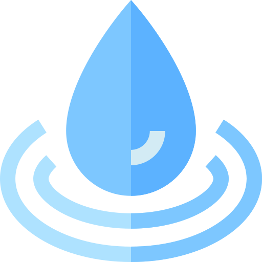

Gerencia de Gestión Ambiental
Descubre cómo esta agrupado el sistema de saneamiento del distrito de Sicuani.
Volver a Inicio
Ver Grafico
Leyenda
Colapsado
Incompleto
Regular
Bueno
Fuente
Rerservorio
Centro Poblado
 Volver a Inicio
Volver a Inicio
Volver a Inicio
Volver a Inicio
 Ver Grafico
Ver Grafico